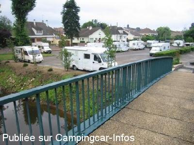
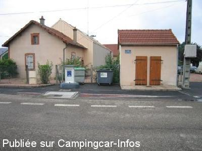

ASN = Aire de services avec stationnement nuit possible de :
LAPALISSE
(N° 110)
Accès/adresse :
Place Jean Moulin
03120 LAPALISSE
03120 LAPALISSE
Latitude : (Nord) 46.25039° Décimaux ou 46° 15′ 1′′
Longitude : (Est) 3.6355° Décimaux ou 3° 38′ 7′′
Tarif : 2016
Stationnement gratuit
Services, électricité : 2 €
Jetons en vente :
A l'Office du Tourisme
A la piscine
Au camping
Au centre technique municipal
Type de borne : EURO-RELAIS
Services :


Poubelles
Tous commerces
Autres informations :
Ouvert toute l'année
15 emplacements goudronnés, éclairés
Attention : marché le jeudi matin
Tel : + 33(0)470 990 839
office.tourisme@cc-paysdelapalisse.fr
http://www.lapalisse-tourisme.com/135_22_Aire-de-camping-car.html

Le 15/08/2005 par westie62

Le 15/08/2005 par westie62
de
hymer584
le 26/02/2016 :
Aire toujours aussi agréable. Est devenue une de nos étapes favorites lorsque nous passons dans la région.
Aire toujours aussi agréable. Est devenue une de nos étapes favorites lorsque nous passons dans la région.
de
G T
le 03/07/2015 :
a mon passage le juillet et avec 37°la borne était en panne , je suis aller a L OT pour avoir une solution, mais rien ne m a été proposer, les services techniques sont pourtant juste a coté, donc pas d eau pas de douche. merci a la ville
a mon passage le juillet et avec 37°la borne était en panne , je suis aller a L OT pour avoir une solution, mais rien ne m a été proposer, les services techniques sont pourtant juste a coté, donc pas d eau pas de douche. merci a la ville
de
besnard jl 41
le 25/09/2014 :
de passage le 25/08: Très bien. Conforme aux précédent commentaire. Boulangerie au pied de l eglise à 400m en remontant vers le château. Visite du château payante mais accès au parc gratuit.
de passage le 25/08: Très bien. Conforme aux précédent commentaire. Boulangerie au pied de l eglise à 400m en remontant vers le château. Visite du château payante mais accès au parc gratuit.
de
Xtian74
le 21/07/2014 :
Passage le 20/07/2014. Effectivement, ce parking permet à une quinzaine de CC, tout au plus, d'y passer une nuit calme (même en comptant les emplacements VN, on doit à peine atteindre une trentaine de places).
La distribution des sens uniques pour y arriver vient d'être modifiée et la signalisation qui existait par le passé n'a pas été remise en place pour l'instant.
Il y a d'autres possibilités de stationnement ouvertes aux CC sur la commune...
Sinon, toujours beaucoup de CC ont passé la nuit sur l'aire, bien placée sur la Nationale 7. Hotspot SFR sur l'aire ainsi qu'une connexion ORANGE non sécurisée...
Passage le 20/07/2014. Effectivement, ce parking permet à une quinzaine de CC, tout au plus, d'y passer une nuit calme (même en comptant les emplacements VN, on doit à peine atteindre une trentaine de places).
La distribution des sens uniques pour y arriver vient d'être modifiée et la signalisation qui existait par le passé n'a pas été remise en place pour l'instant.
Il y a d'autres possibilités de stationnement ouvertes aux CC sur la commune...
Sinon, toujours beaucoup de CC ont passé la nuit sur l'aire, bien placée sur la Nationale 7. Hotspot SFR sur l'aire ainsi qu'une connexion ORANGE non sécurisée...
de
hymer584
le 31/05/2014 :
Avons passé une nuit très tranquille dans cette ville des vérités. Aire proche du centre, commerçants très accueillants. En revanche, si le parking est très grand, je doute fort qu'il puisse accueillir 100 camping-cars car les emplacements sont des emplacements pour voitures. Les camping-cars sont garés pour la majorité, en parallèle au trottoir, notamment ceux ayant une remorque ou une voiture en remorque, et ils étaient nombreux le 27 Mai au soir. Nous étions une vingtaine de véhicules et une dizaine aurait encore pu être accueillie.
Avons passé une nuit très tranquille dans cette ville des vérités. Aire proche du centre, commerçants très accueillants. En revanche, si le parking est très grand, je doute fort qu'il puisse accueillir 100 camping-cars car les emplacements sont des emplacements pour voitures. Les camping-cars sont garés pour la majorité, en parallèle au trottoir, notamment ceux ayant une remorque ou une voiture en remorque, et ils étaient nombreux le 27 Mai au soir. Nous étions une vingtaine de véhicules et une dizaine aurait encore pu être accueillie.
de
eastwood
le 18/07/2013 :
Bonjour, sommes passés en juillet 2013. Aire de parking sur goudron. Les jetons de la borne sont à acheter au local "services municipaux" qui se trouvent à côté. La rivière longe le site, on est à dix minutes à pied du chateau (qui se visite) prendre le pont, puis à droite et tout droit et on tombe sur l'église, puis le chateau.
L'endroit sert aussi de parking pour les voitures et il y a le marché le jeudi matin. Il y a des WC fixes (2 WC à la turcque et un WC normal). Le stationnement est gratuit. Peut être un bémol, les commerces sont inexistants.
Bonjour, sommes passés en juillet 2013. Aire de parking sur goudron. Les jetons de la borne sont à acheter au local "services municipaux" qui se trouvent à côté. La rivière longe le site, on est à dix minutes à pied du chateau (qui se visite) prendre le pont, puis à droite et tout droit et on tombe sur l'église, puis le chateau.
L'endroit sert aussi de parking pour les voitures et il y a le marché le jeudi matin. Il y a des WC fixes (2 WC à la turcque et un WC normal). Le stationnement est gratuit. Peut être un bémol, les commerces sont inexistants.
de
fandi01
le 15/07/2013 :
12 juillet 2013 de passage pour le Tour de France, arrivée tard en soirée, encore de la place aucun souci
aire calme près du canal , à retenir
12 juillet 2013 de passage pour le Tour de France, arrivée tard en soirée, encore de la place aucun souci
aire calme près du canal , à retenir
de
tungstene
le 07/05/2013 :
de passage debut mai 2013 Aire toujours aussi calme. Service en fonctionement.
pour visiter le joli chateau, prendre a droite apres le petit pont a pied c'est a 200m a peine. L'accés au parc et gratuit.
de passage debut mai 2013 Aire toujours aussi calme. Service en fonctionement.
pour visiter le joli chateau, prendre a droite apres le petit pont a pied c'est a 200m a peine. L'accés au parc et gratuit.
de
monique/j.michel routier76
le 23/09/2012 :
bonjour,je voudrai dire un grand merci a la commune pour cette aire vraiment formidable et plus on peut pècher encore merci je vous le recommande a bientot.
bonjour,je voudrai dire un grand merci a la commune pour cette aire vraiment formidable et plus on peut pècher encore merci je vous le recommande a bientot.
de
dan
le 27/08/2012 :
Y étions le 16.08.2012. Toujours aussi calme et agréable.Ne manquez pas de vous proemener dans le parc floral (gratuit) très joli et ombragé. aire de jeux pour enfants. Merci à la commune.
Y étions le 16.08.2012. Toujours aussi calme et agréable.Ne manquez pas de vous proemener dans le parc floral (gratuit) très joli et ombragé. aire de jeux pour enfants. Merci à la commune.
de
pirate28
le 22/08/2012 :
bonjour.
avons passé la nuit du 20 au 21 aout,bel endroit très
calme en bordure de rivière,wc publics nickels,borne
fonctionnelle,grandes surfaces a proximité.
merci lapalisse.
bonjour.
avons passé la nuit du 20 au 21 aout,bel endroit très
calme en bordure de rivière,wc publics nickels,borne
fonctionnelle,grandes surfaces a proximité.
merci lapalisse.
de
Alain et Gilles
le 29/06/2012 :
Aire très agréable proche du centre ville ; grand calme dommage que la borne soit HS (probablement vendalisée).Etape recommandée et merci à la municipalité d'avoir pensé à nous.
Belles ballades estivales à tous.
Aire très agréable proche du centre ville ; grand calme dommage que la borne soit HS (probablement vendalisée).Etape recommandée et merci à la municipalité d'avoir pensé à nous.
Belles ballades estivales à tous.
de
B et C
le 21/05/2012 :
Aire très calme et propre à deux pas du Village qu'il ne faut quitter sans l'avoir visité.
Aire très calme et propre à deux pas du Village qu'il ne faut quitter sans l'avoir visité.